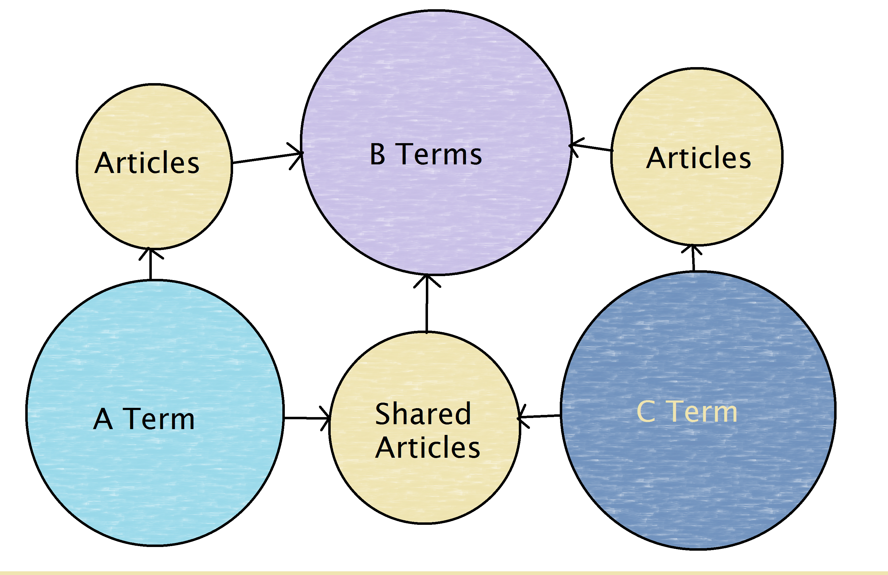

Chemotext
Chemotext

In this module, two query terms are input, and co-occurring terms and the article counts that are shared between the queries are returned.
This type of search outputs the associated counts of co-occurrence for three instances:- when all three terms (query 1, query 2, and co-occurring term) are present in the same article,
- when the term co-occurs only in articles with query 1, and
- when the term co-occurs only in articles with query 2.